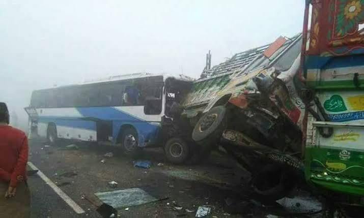

Every winter, dense smog paralyzes the M-2, M-11, and GT Road. Conventional apps treat smog merely as an air quality issue. Drivers continue cruising at 100 km/h until blinding whiteout glare and a greasy chemical dew slick cause fatal multi-vehicle pileups.

Forward dashcam camera frames are continuously audited to protect against sudden catastrophic hazards:
Drivers in zero-visibility fog cannot safely glance at phone screens. SafarGuard delivers critical advisories directly into their cabin:
• Multimodal Frame Inspection: Continuous windshield dashcam stream analysis via Google DeepMind Gemma 4.
• Hazard Classification: Identifies low-contrast unlit sugarcane trolleys, broken-down buses, and high-beam aerosol backscatter.
• Edge & Cloud Dual-Mode: Cloud Gemini API speed with local edge inference fallback for zero-connectivity highway stretches.
• Permissive Open Source: 100% MIT Licensed for public safety adoption.
• Agent Skill Open Standard (SKILL.md): Fully formatted so autonomous AI agents can invoke SafarGuard telemetry as an automated safety tool.
• Empirical Foundation: Integrated Punjab Rescue 1122 dispatch logs and NHMP motorway closure criteria.
Zero preventable highway collision deaths is the only acceptable metric. Smog and fog do not stop at provincial borders—and neither should intelligent highway safety.